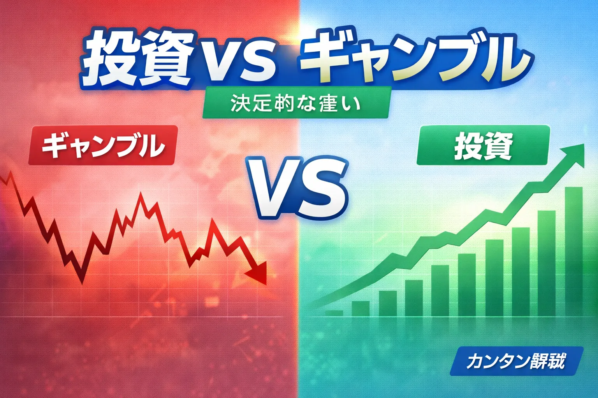
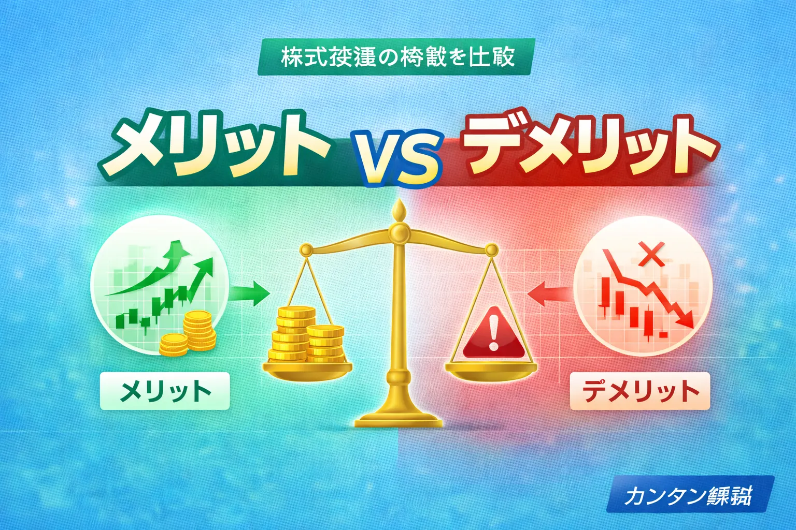
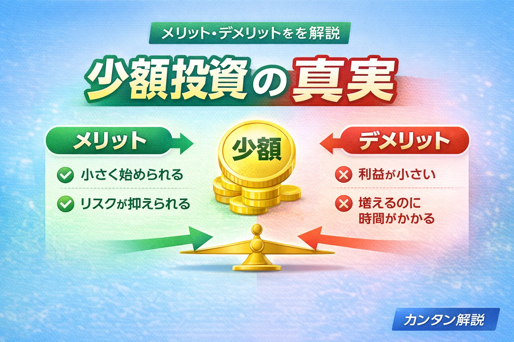
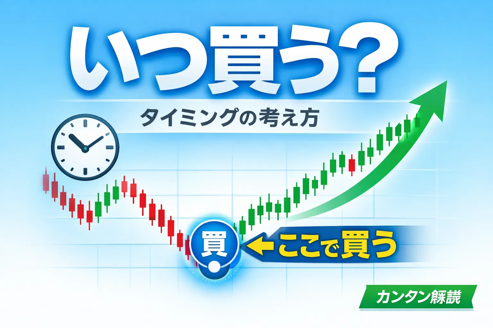
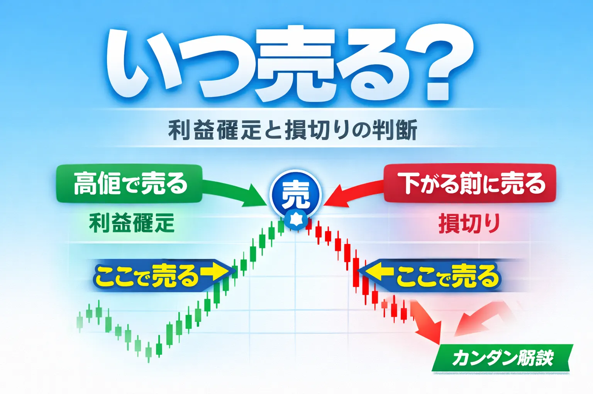
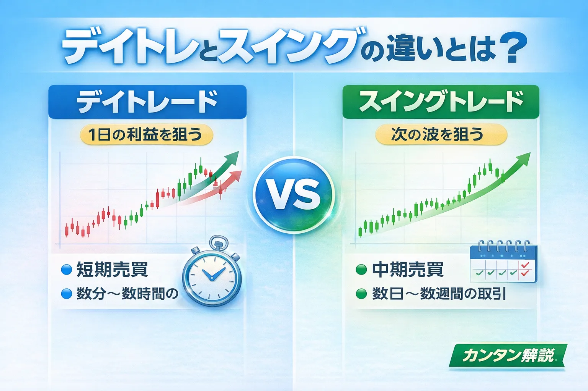

Recommended 01
投資初心者は何から始めるべき？
始め方をわかりやすく解説
Investment Learning Hub
株・FX・仮想通貨・税金・用語解説まで、初心者〜中級者が必要な記事を探しやすいように整理した金融学習ハブです。
初心者の入口 → 投資の基礎 → 投資手法 → 投資商品 → 比較・選び方 → 用語・基礎知識
Recommended
これから投資を始める方が、最初に流れをつかみやすい3本です。
Category
投資を始める前の不安や疑問を、最初に整理したい方向けの入口記事です。
Category
投資とは何か、いくら必要なのか、どんな考え方が大切かをやさしく整理しています。

初心者向けに基本をやさしく解説
最低投資額とおすすめ金額を解説
最初に知っておきたい大切な注意点

お金の増やし方の本質を初心者向けに解説

基本を初心者向けにわかりやすく解説

値動きの理由を初心者向けに解説

初心者向けにわかりやすく解説

初心者向けにやさしく整理して解説

初心者向けにタイミングの考え方を解説

利益確定と損切りの判断基準を解説

初心者向けに特徴を比較して解説
Category
積立・分散・長期保有など、資産形成でよく使われる考え方や方法をまとめています。
Category
投資信託・ETF・米国株・配当投資など、商品やテーマ別に基本を学べます。
Category
商品や口座を選ぶときに迷いやすいテーマを、比較形式で整理しています。
Category
FX初心者向けに、用語・相場の見方・自動売買のリスクを整理しています。 取引を始める前に、仕組みや注意点を確認しておきたい方向けの解説記事です。
Category
一般ユーザー目線でまとめたレビューや、関連ジャンルへの導線です。
Knowledge Dictionary
記事を読んでいて分からない言葉や、取引前に確認したい基本知識をジャンル別に整理しています。 株・FX・仮想通貨・税金の知識を、必要なときにすぐ見返せる辞典ページとして使えます。
株式投資でよく出る用語や、国内株・海外株の違いを確認できます。
pips・スプレッド・ロットなど、FX記事を読む前に押さえたい用語を整理しています。
取引所・ウォレット・税金など、暗号資産を調べる前に知っておきたい基礎をまとめています。
株・FX・仮想通貨で利益が出たときに確認したい税金の違いを整理しています。